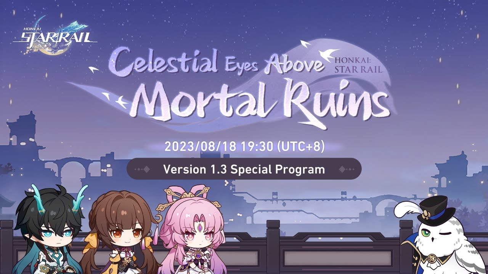
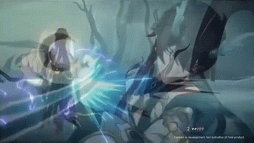

Detalhes da Live de Honkai Star Rail sobre a 1.3
Confira a live clicando AQUI.
Honkai Star Rail é um dos novos jogos da empresa Mihoyo conhecida por seus outros projetos, como Genshin Impact, e Honkai Impact 3rd.
Honkai Star Rail é um jogo de estratégia em turno, de mundo aberto, com sistema gacha igual Genshin Impact, com uma história incrivel. Na ultima live que os canais oficiais do Honkai: Star Rail fizeram, eles falaram sobre os novos personagens, eventos, cones des luz, novas historias, e uma nova faze no Universo Simulado.
Personagens novos
Vamos começar com um dos novos personagens mais esperado, o Dan Heng Embebidor Lunae.

Dan Heng Embebidor Lunae ou tambem conhecido pelo comunidade como Dan Heng IL, vai ser o primeiro personagem no banner da 1.3, do elemento imaginario, seguinho o caminho da destruição, e ele apresenta as seguintes abilidades.
Ataque Basico: Beneficient Lotus
Beneficient Lotus, faz com que o Dan Heng IL avance para frente e acerte um unico inimigo 3 vezes dando dano do tipo imaginario.

Pericia de Aprimoramento: Dracore Libre
Essa abilidade melhora os ataques do Dan Heng IL até o maximo de 3 vezes

Transcendence
Dan Heng IL avança para frente do inimigo fazendo um ataque em formato de uma flor de lotus

Divine Spear
Assim como na Transcendence ele avança para frente do inimigo fazendo um ataque em formato de uma flor de lotus mas antes de terminar ele joga varias lanças de água a o alvo principal e adjacentes.

Fulgurant Leap
Dan Heng IL invoca um dragão de água de baixo do inimigo alvo e acertando inimigos adjacentes com uma grande quantidade de dano.
